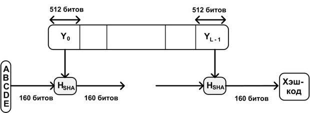
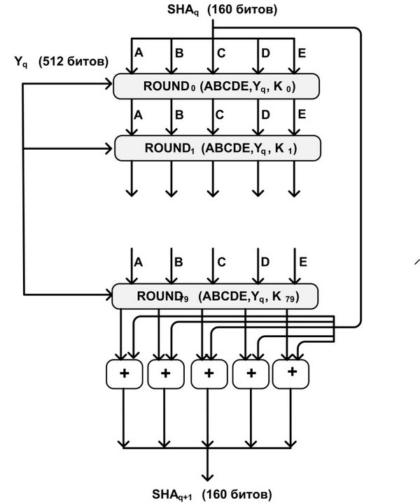
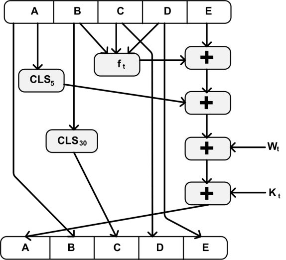
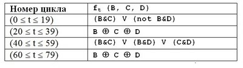
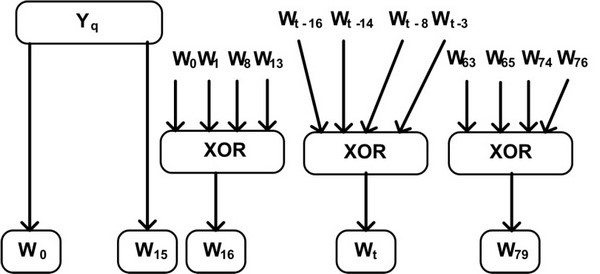

Безопасный хэш-алгоритм (Secure Hash Algorithm) был разработан NIST и опубликован в качестве федерального информационного стандарта (FIPS PUB 180) в 1993 году. У алгоритмов MD5 и SHA-1 много общего. Алгоритм получает на входе сообщение произвольной длины и создает в качестве выхода дайджест сообщения длиной 160 бит. Алгоритм состоит из следующих шагов:
Сообщение добавляется таким образом, чтобы его длина была кратна 448 по модулю 512 (длина = 448 (mod 512)). Добавление осуществля-ется всегда, даже если сообщение уже имеет нужную длину. Таким образом, число добавляемых битов находится в диапазоне от 1 до 512. Добавление состоит из единицы, за которой следует необходимое количество нулей.
СК сообщению добавляется блок из 64 битов. Этот блок трактуется как беззнаковое 64-битное целое и содержит длину исходного сообщения до добавления. Результатом первых двух шагов является сообщение, длина которого кратна 512 битам. Расширенное сообщение может быть представлено как последовательность 512-битных блоков Y0, Y1, . . . ,YL-1, так что общая длина расширенного сообщения есть L * 512 бит. Таким образом, результат кратен шестнадцати 32-битным словам.
Используется 160-битный буфер для хранения промежуточных и окон-чательных результатов хэш-функции. Буфер может быть представлен как пять 32-битных регистров A, B, C, D и E. Эти регистры инициализируются следующими шестнадцатеричными числами: A = 67452301 B = EFCDAB89 C = 98BADCFE D = 10325476 E = C3D2E1F0
Основой алгоритма является модуль, состоящий из 80 циклических обработок, обозначенный как HSHA. Все 80 циклических обработок имеют одинаковую структуру (рис. 3.6). Каждый цикл получает на входе текущий 512-битный обрабатываемый блок Yq и 160-битное значение буфера ABCDE, и изменяет содержимое этого буфера. В каждом цикле используется дополнительная константа Кt которая принимает только четыре различных значения:
Для получения SHAq+1 выход 80-го цикла складывается со значением SHAq. Сложение по модулю 232 выполняется независимо для каждого из пяти слов в буфере с каждым из соответствующих слов в SHAq.
После обработки всех 512-битных блоков выходом L-ой стадии является 160-битный дайджест сообщения. Вот так выглядит логика выполнения отдельного цикла:
Рис. 3.7. Логика выполнения отдельного цикла
Каждая элементарная функция получает на входе три 32-битных слова и создает на выходе одно 32-битное слово. Элементарная функция выполняет набор побитных логических операций, т.е. n-ый бит выхода является функцией от n-ых битов трех входов. Функции следующие: Таблица 3.1
На самом деле используются только три различные функции. Для 0 ≤ t ≤ 19 функция является условной: if B then C else D Для 20 ≤ t ≤ 39 и 60 ≤ t ≤ 79 функция создает бит четности. Для 40 ≤ t ≤ 59 функция является истинной, если два или три аргумента истинны. 32-битные слова Wt получаются из очередного 512-битного блока сообщения следующим образом.
Рис. 3.9. Получение входных значений каждого цикла из очередного блока
Первые 16 значений Wt берутся непосредственно из 16 слов текущего блока. Оставшиеся значения определяются следующим образом:
В первых 16 циклах вход состоит из 32-битного слова данного блока. Для оставшихся 64 циклов вход состоит из XOR нескольких слов из блока сообщения.